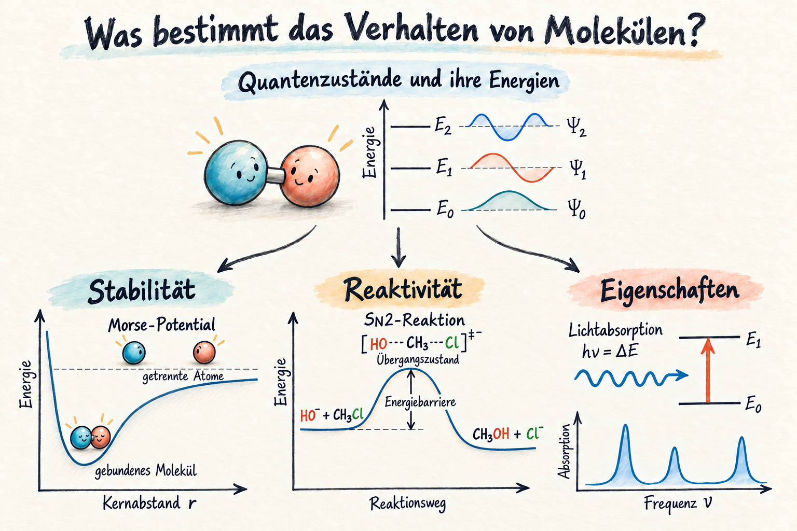
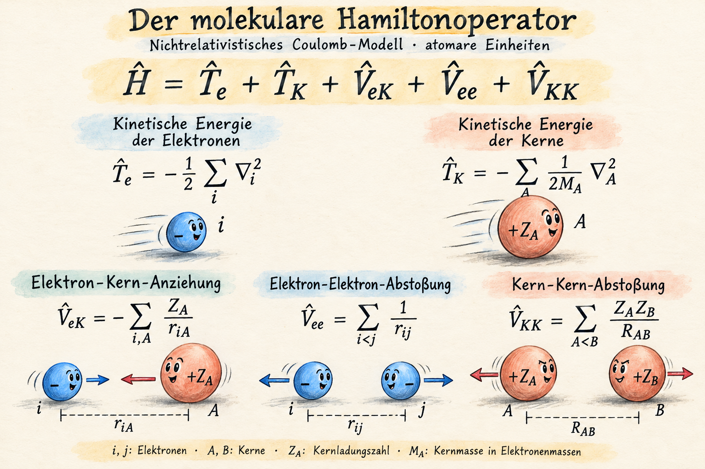
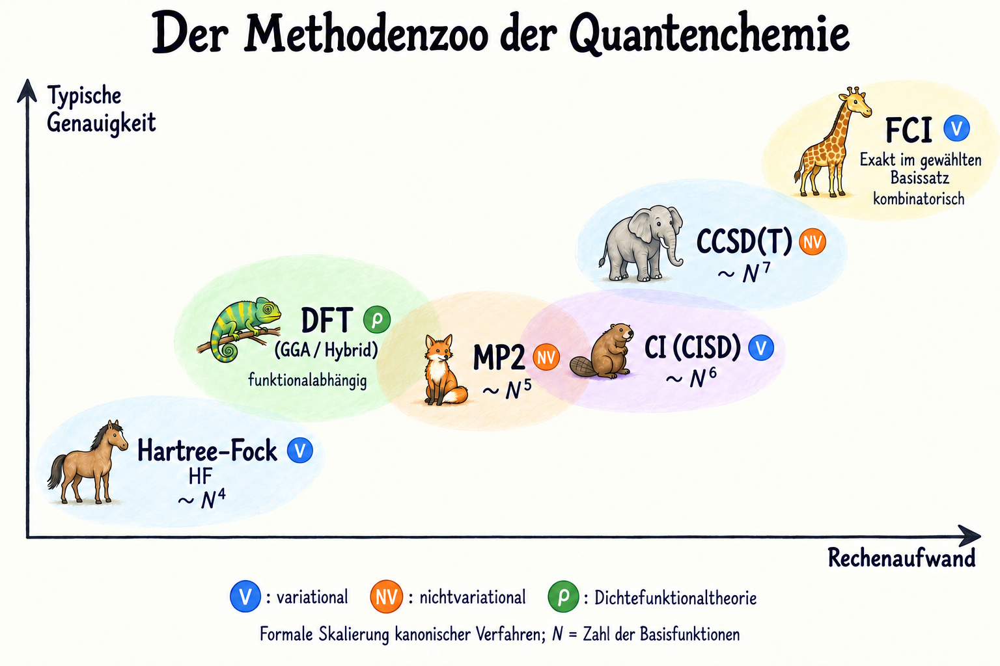

Introduction#
Diese Vorlesung führt in die Grundlagen und Methoden der Quantenchemie ein.
Die Quantenchemie, auch molekulare Quantenmechanik genannt, ist ein Teilgebiet der physikalischen Chemie, das die Quantenmechanik auf molekulare Systeme anwendet. Sie bildet die theoretische Grundlage unseres Verständnisses von zentralen chemischen Konzepten wie molekularer Struktur, chemischer Bindung, Reaktivität und Spektroskopie.
Das Hauptziel der Quantenchemie besteht darin, die physikalischen und chemischen Eigenschaften von Molekülen und Materialien aus den quantenmechanischen Grundgleichungen vorherzusagen. Dazu werden Näherungsverfahren entwickelt, die die sehr komplexen Vielteilchengleichungen der Quantenmechanik mathematisch und numerisch behandelbar machen. Diese Methoden reichen von der Hartree-Fock-Theorie (HF) über Dichtefunktionalverfahren (DFT) bis hin zu hochgenauen Korrelationsmethoden (CI) und erlauben es, Strukturen, Energien, Spektren und Reaktionspfade mit hoher Genauigkeit zu berechnen.
Neben der Beschreibung stationärer Zustände gewinnt auch die zeitabhängige Quantenchemie an Bedeutung. Sie ermöglicht die Untersuchung von elektronischer Dynamik, nichtadiabatischen Übergängen und lichtinduzierten Reaktionen, die für Photochemie, Katalyse und Materialwissenschaften von zentraler Relevanz sind.
Die Quantenchemie verbindet also die fundamentalen Prinzipien der Quantenphysik mit der Welt chemischer Phänomene. Sie eröffnet die Möglichkeit, die Eigenschaften komplexer Moleküle und Materialien bereits am Computer zu verstehen und gezielt vorherzusagen.
Beispiel: Die folgende Abbildung zeigt an einem Beispiel aus der aktuellen Forschung, wie Quantenchemie molekulare Struktur, chemische Bindung, Spektroskopie und Dynamik miteinander verbindet.

Die Potentialkurven beschreiben die Energie verschiedener elektronischer Zustände in Abhängigkeit vom Kernabstand; die Orbitale veranschaulichen die Bindungsverhältnisse. Das Photoelektronenspektrum verbindet Theorie und Experiment, während die zeitabhängigen Ce₂⁺-Signale Einblick in die Bewegung von Schwingungswellenpaketen im neutralen Ce₂ geben.
Original-Abb. 2-4 aus Jin et al. (2025), Journal of the American Chemical Society 147, 37977-37984; vollständige Referenz in der Abbildung. © 2025 The Authors; published by American Chemical Society. Wiederverwendung unter CC BY 4.0. Änderungen: neue Anordnung und deutsche Überschriften; Originalabbildungen unverändert.

The underlying physical laws necessary for the mathematical theory of a large part of physics and the whole of chemistry are thus completely known, and the difficulty is only that the exact application of these laws leads to equations much too complicated to be soluble. It therefore becomes desirable that approximate practical methods of applying quantum mechanics should be developed, which can lead to an explanation of the main features of complex atomic systems without too much computation.
— P. A. M. Dirac (1929)
Die grundlegenden physikalischen Gesetze, die für die mathematische Theorie eines großen Teils der Physik und der gesamten Chemie erforderlich sind, sind somit vollständig bekannt. Die Schwierigkeit besteht lediglich darin, dass ihre exakte Anwendung zu Gleichungen führt, die viel zu kompliziert sind, um gelöst werden zu können. Daher ist es wünschenswert, praktikable Näherungsmethoden zur Anwendung der Quantenmechanik zu entwickeln, mit denen sich die wesentlichen Eigenschaften komplexer atomarer Systeme ohne allzu großen Rechenaufwand erklären lassen.
— P. A. M. Dirac (1929), deutsche Übersetzung.
Image source: Wikimedia Commons, public domain.

Von der Quantenmechanik zur molekularen Schrödingergleichung#
Diracs berühmtes Zitat formuliert das damit das zentrale Programm der Quantenchemie.
Unsere Aufgabe besteht nun darin zu verstehen, wie sich aus den bekannten Prinzipien der Quantenmechanik die Struktur, Reaktivität und andere Eigenschaften von Molekülen ableiten lassen.
Die Energien eines chemischen Systems sind der Schlüssel zum Verständnis seines Verhaltens. Zusammen mit den zugehörigen quantenmechanischen Zuständen ermöglichen sie es, die Stabilität molekularer Strukturen, chemische Reaktionen und physikalische Eigenschaften zu erklären und vorherzusagen. Die Bestimmung dieser Zustände und ihrer Energien ist daher eine zentrale Aufgabe der Quantenchemie.

Quantenzustände und ihre Energien bilden die Grundlage für das Verständnis molekularer Stabilität, chemischer Reaktivität und spektroskopischer Eigenschaften.
Im Zentrum der Quantenchemie steht die (stationäre) Schrödingergleichung, die uns Energie und stationäre Zustände eines molekularen Systems liefert. Diese hat die Form eines Eigenwertproblems:
Hier ist \(\hat H\) der Hamiltonoperator und \(\Psi\) die Wellenfunktion, die alle Informationen über das System enthält.
Für ein isoliertes Molekül lautet der Hamiltonoperator im nichtrelativistischen Coulomb-Modell (in atomaren Einheiten):
Dabei bezeichnen \(i,j\) die Elektronen und \(A,B\) die Kerne. \(Z_A\) ist die Kernladungszahl und \(M_A\) die Kernmasse in Einheiten der Elektronenmasse. Die Größen \(r_{iA}\), \(r_{ij}\) und \(R_{AB}\) sind die Abstände zwischen Elektron und Kern, zwischen zwei Elektronen bzw. zwischen zwei Kernen.
Die einzelnen Terme beschreiben (in dieser Reihenfolge) die kinetische Energie der Elektronen, die kinetische Energie der Kerne, die Anziehung zwischen Elektronen und Kernen, die Elektron–Elektron-Abstoßung sowie die Kern–Kern-Abstoßung.

Die fünf Beiträge zum molekularen Hamiltonoperator: kinetische Energien von Elektronen und Kernen sowie die drei Coulomb-Wechselwirkungen.
Dieser Hamiltonoperator beschreibt sowohl die Elektronen- als auch die Kernbewegung. Bei der späteren Behandlung der Elektronenstruktur werden wir im Rahmen der Born-Oppenheimer-Näherung zunächst feste Kernpositionen betrachten.
Die kompakte Schreibweise darf nicht darüber hinwegtäuschen, dass die Wellenfunktion von den Koordinaten aller Elektronen und Kerne abhängt. Die Coulomb-Wechselwirkungen koppeln ihre Bewegungen, sodass sich das Problem im Allgemeinen nicht in unabhängige Einteilchenprobleme zerlegen lässt.
Für molekulare Vielteilchensysteme stehen im Allgemeinen keine geschlossenen analytischen Lösungen zur Verfügung.
Die zentrale Herausforderung der Quantenchemie besteht daher in der Entwicklung von Näherungen: Wir müssen Ansätze für die Wellenfunktionen konstruieren, die die wesentlichen physikalischen Effekte erfassen, aber noch berechenbar bleiben.
Als Grundlage für die Entwicklung solcher Näherungsverfahren lernen wir im Folgenden das Variationsprinzip kennen. Es erlaubt uns, geeignete Ansätze für die Wellenfunktion energetisch zu beurteilen und zu optimieren. Das Prinzip selbst ist exakt; die Näherung entsteht durch die Einschränkung der zugelassenen Wellenfunktionen. Auf dieser Grundlage beruhen beispielsweise die Hartree-Fock- und die Configuration-Interaction-Methode.

Ausgewählte quantenchemische Methoden im Vergleich: typische Genauigkeit, Rechenaufwand und variationaler Charakter.